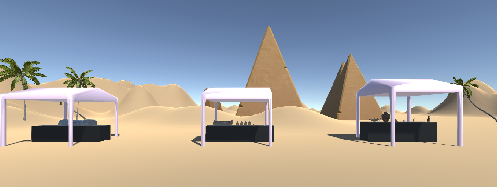

Virtual Tomb.

We started off by creating a desert landscape where the user could escape the heat by entering our virtual dig site. Underneath the pink tents, users could view ancient egyptian artifacts and read descriptions about them that popped up when they approached the object.
Most of the assets exhibited are from the Unity Asset Store, but the research accompanying them was done collaboratively by the group of students I worked with.

By approaching the stila to the left of the dig site, users were transported into the tomb we modeled in sketch up we made by referencing this schematic.When in the tomb, users heard a reading of the Book of the Dead. They were able to walk about the tomb, explore different facets of the tomb that we exhibited while also getting a feel for the scale of these monuments.
In the future, I’d like to see this project become more specific to the coffin we chose to exhibit. I know there are limitations given the research and funding that surrounds these artifacts and this project, but I think it would be an incredible opportunity to delve deeper into the world of egyptology.